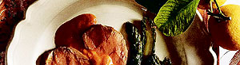

Schnittlauch-Rahmsauce
5 von 6eine frühlingszwiebel fein schneiden und mit butter andünsten.
mit ca. 1dl bouillon und sherry (original rezept wäre mit wermouth) ablöschen, einkochen.
ca. 1.5 dl rahm beifügen, aufkochen und auf kleiner stufe köcheln lassen.
ganz am schluss viel schnittlauch beifügen.
